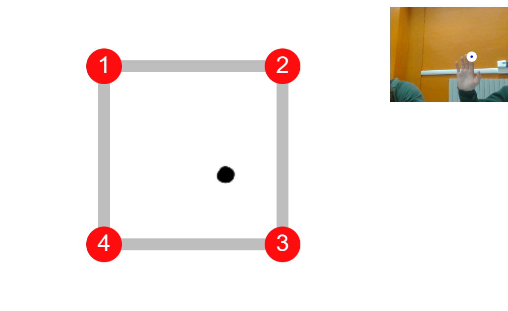

ISTRUZIONI
Per poter utilizzare il nostro gioco è sufficiente avere a disposizone un computer e una webcam!
Il gioco consiste in un percorso a ostacoli che il nostro personaggio dovrà affrontare, voi dovrete aiutarlo a superare gli ostacoli completando delle figure.
Questo sarà possibile tramite la webcam che tracciando il vostro dito vi permetterà di disegnare.
Per superare il livello bisognerà iniziare la figura dal pallino con il numero 1, procedere seguendo l'ordine dei puntini e tornare sul punto iniziale, su cui bisognerà restare qualche secondo per poter continuare il gioco.
La vittoria arriva quando riuscirete a superare tutti i livelli!
Alla fine otterrete anche un punteggio in base a quanto sono state eseguite correttamente le figure e sarà visibile anche il numero di errori. Da questi valori oltre a capire la precisione con cui è stata eseguita la figura, si potrà capire inoltre il tempo di esecuzione in quanto: più il punteggio sarà alto più tempo sarà stato impiegato nella realizzazione.
Non vi resta che iniziare a giocare e divertirvi.
HOME
